8.1. 堆¶
「堆 Heap」是一种满足特定条件的完全二叉树，可分为两种类型：
- 「大顶堆 Max Heap」，任意节点的值 \(\geq\) 其子节点的值；
- 「小顶堆 Min Heap」，任意节点的值 \(\leq\) 其子节点的值；
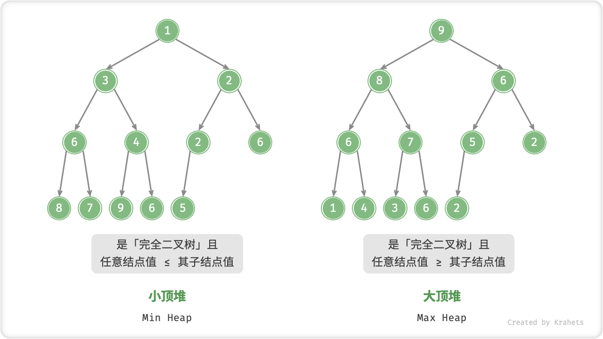
Fig. 小顶堆与大顶堆
堆作为完全二叉树的一个特例，具有以下特性：
- 最底层节点靠左填充，其他层的节点都被填满。
- 我们将二叉树的根节点称为「堆顶」，将底层最靠右的节点称为「堆底」。
- 对于大顶堆（小顶堆），堆顶元素（即根节点）的值分别是最大（最小）的。
8.1.1. 堆常用操作¶
需要指出的是，许多编程语言提供的是「优先队列 Priority Queue」，这是一种抽象数据结构，定义为具有优先级排序的队列。
实际上，堆通常用作实现优先队列，大顶堆相当于元素按从大到小顺序出队的优先队列。从使用角度来看，我们可以将「优先队列」和「堆」看作等价的数据结构。因此，本书对两者不做特别区分，统一使用「堆」来命名。
堆的常用操作见下表，方法名需要根据编程语言来确定。
| 方法名 | 描述 | 时间复杂度 |
|---|---|---|
| push() | 元素入堆 | \(O(\log n)\) |
| pop() | 堆顶元素出堆 | \(O(\log n)\) |
| peek() | 访问堆顶元素（大 / 小顶堆分别为最大 / 小值） | \(O(1)\) |
| size() | 获取堆的元素数量 | \(O(1)\) |
| isEmpty() | 判断堆是否为空 | \(O(1)\) |
在实际应用中，我们可以直接使用编程语言提供的堆类（或优先队列类）。
Tip
类似于排序算法中的“从小到大排列”和“从大到小排列”，我们可以通过修改 Comparator 来实现“小顶堆”与“大顶堆”之间的转换。
/* 初始化堆 */
// 初始化小顶堆
Queue<Integer> minHeap = new PriorityQueue<>();
// 初始化大顶堆（使用 lambda 表达式修改 Comparator 即可）
Queue<Integer> maxHeap = new PriorityQueue<>((a, b) -> b - a);
/* 元素入堆 */
maxHeap.offer(1);
maxHeap.offer(3);
maxHeap.offer(2);
maxHeap.offer(5);
maxHeap.offer(4);
/* 获取堆顶元素 */
int peek = maxHeap.peek(); // 5
/* 堆顶元素出堆 */
// 出堆元素会形成一个从大到小的序列
peek = heap.poll(); // 5
peek = heap.poll(); // 4
peek = heap.poll(); // 3
peek = heap.poll(); // 2
peek = heap.poll(); // 1
/* 获取堆大小 */
int size = maxHeap.size();
/* 判断堆是否为空 */
boolean isEmpty = maxHeap.isEmpty();
/* 输入列表并建堆 */
minHeap = new PriorityQueue<>(Arrays.asList(1, 3, 2, 5, 4));
/* 初始化堆 */
// 初始化小顶堆
priority_queue<int, vector<int>, greater<int>> minHeap;
// 初始化大顶堆
priority_queue<int, vector<int>, less<int>> maxHeap;
/* 元素入堆 */
maxHeap.push(1);
maxHeap.push(3);
maxHeap.push(2);
maxHeap.push(5);
maxHeap.push(4);
/* 获取堆顶元素 */
int peek = maxHeap.top(); // 5
/* 堆顶元素出堆 */
// 出堆元素会形成一个从大到小的序列
maxHeap.pop(); // 5
maxHeap.pop(); // 4
maxHeap.pop(); // 3
maxHeap.pop(); // 2
maxHeap.pop(); // 1
/* 获取堆大小 */
int size = maxHeap.size();
/* 判断堆是否为空 */
bool isEmpty = maxHeap.empty();
/* 输入列表并建堆 */
vector<int> input{1, 3, 2, 5, 4};
priority_queue<int, vector<int>, greater<int>> minHeap(input.begin(), input.end());
# 初始化小顶堆
min_heap, flag = [], 1
# 初始化大顶堆
max_heap, flag = [], -1
# Python 的 heapq 模块默认实现小顶堆
# 考虑将“元素取负”后再入堆，这样就可以将大小关系颠倒，从而实现大顶堆
# 在本示例中，flag = 1 时对应小顶堆，flag = -1 时对应大顶堆
# 元素入堆
heapq.heappush(max_heap, flag * 1)
heapq.heappush(max_heap, flag * 3)
heapq.heappush(max_heap, flag * 2)
heapq.heappush(max_heap, flag * 5)
heapq.heappush(max_heap, flag * 4)
# 获取堆顶元素
peek: int = flag * max_heap[0] # 5
# 堆顶元素出堆
# 出堆元素会形成一个从大到小的序列
val = flag * heapq.heappop(max_heap) # 5
val = flag * heapq.heappop(max_heap) # 4
val = flag * heapq.heappop(max_heap) # 3
val = flag * heapq.heappop(max_heap) # 2
val = flag * heapq.heappop(max_heap) # 1
# 获取堆大小
size: int = len(max_heap)
# 判断堆是否为空
is_empty: bool = not max_heap
# 输入列表并建堆
min_heap: List[int] = [1, 3, 2, 5, 4]
heapq.heapify(min_heap)
// Go 语言中可以通过实现 heap.Interface 来构建整数大顶堆
// 实现 heap.Interface 需要同时实现 sort.Interface
type intHeap []any
// Push heap.Interface 的方法，实现推入元素到堆
func (h *intHeap) Push(x any) {
// Push 和 Pop 使用 pointer receiver 作为参数
// 因为它们不仅会对切片的内容进行调整，还会修改切片的长度。
*h = append(*h, x.(int))
}
// Pop heap.Interface 的方法，实现弹出堆顶元素
func (h *intHeap) Pop() any {
// 待出堆元素存放在最后
last := (*h)[len(*h)-1]
*h = (*h)[:len(*h)-1]
return last
}
// Len sort.Interface 的方法
func (h *intHeap) Len() int {
return len(*h)
}
// Less sort.Interface 的方法
func (h *intHeap) Less(i, j int) bool {
// 如果实现小顶堆，则需要调整为小于号
return (*h)[i].(int) > (*h)[j].(int)
}
// Swap sort.Interface 的方法
func (h *intHeap) Swap(i, j int) {
(*h)[i], (*h)[j] = (*h)[j], (*h)[i]
}
// Top 获取堆顶元素
func (h *intHeap) Top() any {
return (*h)[0]
}
/* Driver Code */
func TestHeap(t *testing.T) {
/* 初始化堆 */
// 初始化大顶堆
maxHeap := &intHeap{}
heap.Init(maxHeap)
/* 元素入堆 */
// 调用 heap.Interface 的方法，来添加元素
heap.Push(maxHeap, 1)
heap.Push(maxHeap, 3)
heap.Push(maxHeap, 2)
heap.Push(maxHeap, 4)
heap.Push(maxHeap, 5)
/* 获取堆顶元素 */
top := maxHeap.Top()
fmt.Printf("堆顶元素为 %d\n", top)
/* 堆顶元素出堆 */
// 调用 heap.Interface 的方法，来移除元素
heap.Pop(maxHeap) // 5
heap.Pop(maxHeap) // 4
heap.Pop(maxHeap) // 3
heap.Pop(maxHeap) // 2
heap.Pop(maxHeap) // 1
/* 获取堆大小 */
size := len(*maxHeap)
fmt.Printf("堆元素数量为 %d\n", size)
/* 判断堆是否为空 */
isEmpty := len(*maxHeap) == 0
fmt.Printf("堆是否为空 %t\n", isEmpty)
}
/* 初始化堆 */
// 初始化小顶堆
PriorityQueue<int, int> minHeap = new PriorityQueue<int, int>();
// 初始化大顶堆（使用 lambda 表达式修改 Comparator 即可）
PriorityQueue<int, int> maxHeap = new PriorityQueue<int, int>(Comparer<int>.Create((x, y) => y - x));
/* 元素入堆 */
maxHeap.Enqueue(1, 1);
maxHeap.Enqueue(3, 3);
maxHeap.Enqueue(2, 2);
maxHeap.Enqueue(5, 5);
maxHeap.Enqueue(4, 4);
/* 获取堆顶元素 */
int peek = maxHeap.Peek();//5
/* 堆顶元素出堆 */
// 出堆元素会形成一个从大到小的序列
peek = maxHeap.Dequeue(); // 5
peek = maxHeap.Dequeue(); // 4
peek = maxHeap.Dequeue(); // 3
peek = maxHeap.Dequeue(); // 2
peek = maxHeap.Dequeue(); // 1
/* 获取堆大小 */
int size = maxHeap.Count;
/* 判断堆是否为空 */
bool isEmpty = maxHeap.Count == 0;
/* 输入列表并建堆 */
minHeap = new PriorityQueue<int, int>(new List<(int, int)> { (1, 1), (3, 3), (2, 2), (5, 5), (4, 4), });
8.1.2. 堆的实现¶
下文实现的是大顶堆。若要将其转换为小顶堆，只需将所有大小逻辑判断取逆（例如，将 \(\geq\) 替换为 \(\leq\) ）。感兴趣的读者可以自行实现。
堆的存储与表示¶
我们在二叉树章节中学习到，完全二叉树非常适合用数组来表示。由于堆正是一种完全二叉树，我们将采用数组来存储堆。
当使用数组表示二叉树时，元素代表节点值，索引代表节点在二叉树中的位置。节点指针通过索引映射公式来实现。
具体而言，给定索引 \(i\) ，其左子节点索引为 \(2i + 1\) ，右子节点索引为 \(2i + 2\) ，父节点索引为 \((i - 1) / 2\)（向下取整）。当索引越界时，表示空节点或节点不存在。
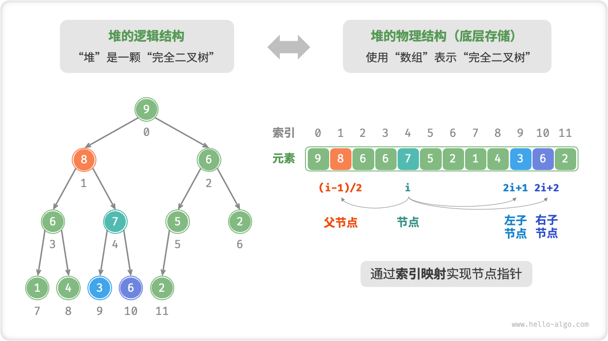
Fig. 堆的表示与存储
我们可以将索引映射公式封装成函数，方便后续使用。
访问堆顶元素¶
堆顶元素即为二叉树的根节点，也就是列表的首个元素。
元素入堆¶
给定元素 val ，我们首先将其添加到堆底。添加之后，由于 val 可能大于堆中其他元素，堆的成立条件可能已被破坏。因此，需要修复从插入节点到根节点的路径上的各个节点，这个操作被称为「堆化 Heapify」。
考虑从入堆节点开始，从底至顶执行堆化。具体来说，我们比较插入节点与其父节点的值，如果插入节点更大，则将它们交换。然后继续执行此操作，从底至顶修复堆中的各个节点，直至越过根节点或遇到无需交换的节点时结束。
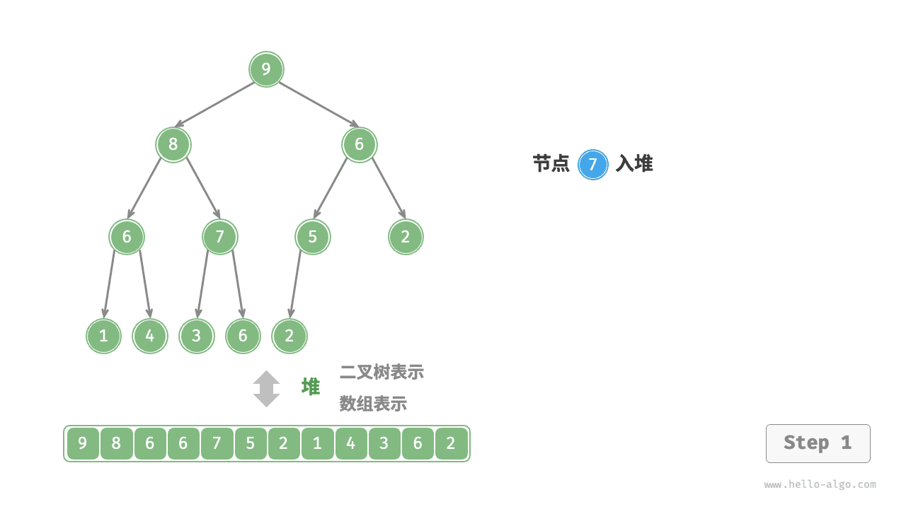

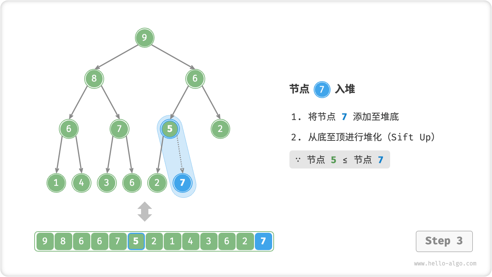


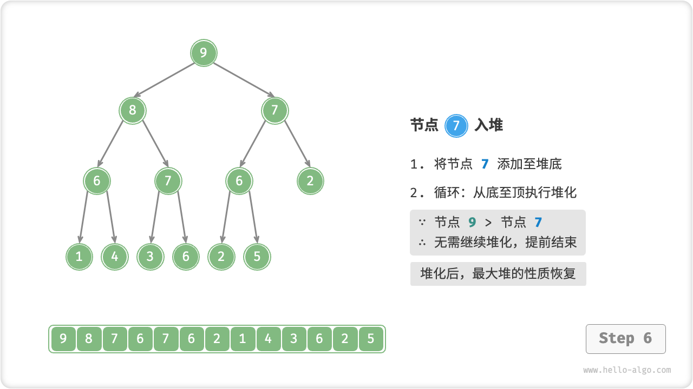
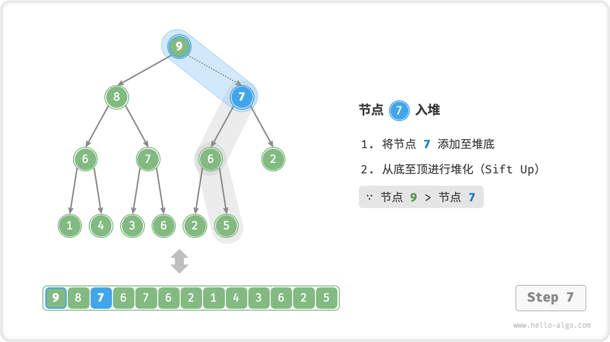
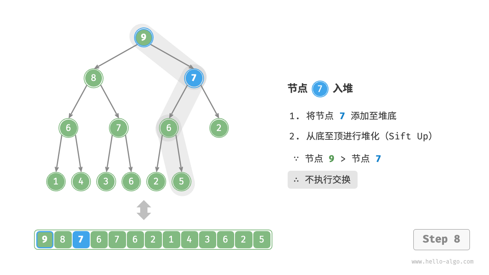
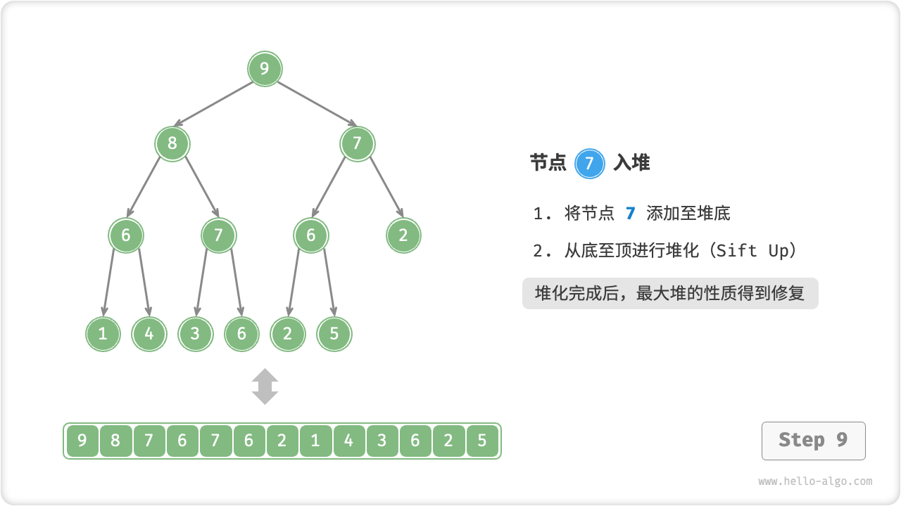
设节点总数为 \(n\) ，则树的高度为 \(O(\log n)\) 。由此可知，堆化操作的循环轮数最多为 \(O(\log n)\) ，元素入堆操作的时间复杂度为 \(O(\log n)\) 。
/* 元素入堆 */
void push(int val) {
// 添加节点
maxHeap.add(val);
// 从底至顶堆化
siftUp(size() - 1);
}
/* 从节点 i 开始，从底至顶堆化 */
void siftUp(int i) {
while (true) {
// 获取节点 i 的父节点
int p = parent(i);
// 当“越过根节点”或“节点无需修复”时，结束堆化
if (p < 0 || maxHeap.get(i) <= maxHeap.get(p))
break;
// 交换两节点
swap(i, p);
// 循环向上堆化
i = p;
}
}
/* 元素入堆 */
void push(int val) {
// 添加节点
maxHeap.push_back(val);
// 从底至顶堆化
siftUp(size() - 1);
}
/* 从节点 i 开始，从底至顶堆化 */
void siftUp(int i) {
while (true) {
// 获取节点 i 的父节点
int p = parent(i);
// 当“越过根节点”或“节点无需修复”时，结束堆化
if (p < 0 || maxHeap[i] <= maxHeap[p])
break;
// 交换两节点
swap(maxHeap[i], maxHeap[p]);
// 循环向上堆化
i = p;
}
}
def push(self, val: int):
"""元素入堆"""
# 添加节点
self.max_heap.append(val)
# 从底至顶堆化
self.sift_up(self.size() - 1)
def sift_up(self, i: int):
"""从节点 i 开始，从底至顶堆化"""
while True:
# 获取节点 i 的父节点
p = self.parent(i)
# 当“越过根节点”或“节点无需修复”时，结束堆化
if p < 0 or self.max_heap[i] <= self.max_heap[p]:
break
# 交换两节点
self.swap(i, p)
# 循环向上堆化
i = p
/* 元素入堆 */
func (h *maxHeap) push(val any) {
// 添加节点
h.data = append(h.data, val)
// 从底至顶堆化
h.siftUp(len(h.data) - 1)
}
/* 从节点 i 开始，从底至顶堆化 */
func (h *maxHeap) siftUp(i int) {
for true {
// 获取节点 i 的父节点
p := h.parent(i)
// 当“越过根节点”或“节点无需修复”时，结束堆化
if p < 0 || h.data[i].(int) <= h.data[p].(int) {
break
}
// 交换两节点
h.swap(i, p)
// 循环向上堆化
i = p
}
}
/* 元素入堆 */
push(val) {
// 添加节点
this.#maxHeap.push(val);
// 从底至顶堆化
this.#siftUp(this.size() - 1);
}
/* 从节点 i 开始，从底至顶堆化 */
#siftUp(i) {
while (true) {
// 获取节点 i 的父节点
const p = this.#parent(i);
// 当“越过根节点”或“节点无需修复”时，结束堆化
if (p < 0 || this.#maxHeap[i] <= this.#maxHeap[p]) break;
// 交换两节点
this.#swap(i, p);
// 循环向上堆化
i = p;
}
}
/* 元素入堆 */
push(val: number): void {
// 添加节点
this.maxHeap.push(val);
// 从底至顶堆化
this.siftUp(this.size() - 1);
}
/* 从节点 i 开始，从底至顶堆化 */
siftUp(i: number): void {
while (true) {
// 获取节点 i 的父节点
const p = this.parent(i);
// 当“越过根节点”或“节点无需修复”时，结束堆化
if (p < 0 || this.maxHeap[i] <= this.maxHeap[p]) break;
// 交换两节点
this.swap(i, p);
// 循环向上堆化
i = p;
}
}
/* 元素入堆 */
void push(maxHeap *h, int val) {
// 默认情况下，不应该添加这么多节点
if (h->size == MAX_SIZE) {
printf("heap is full!");
return;
}
// 添加节点
h->data[h->size] = val;
h->size++;
// 从底至顶堆化
siftUp(h, h->size - 1);
}
/* 从节点 i 开始，从底至顶堆化 */
void siftUp(maxHeap *h, int i) {
while (true) {
// 获取节点 i 的父节点
int p = parent(h, i);
// 当“越过根节点”或“节点无需修复”时，结束堆化
if (p < 0 || h->data[i] <= h->data[p]) {
break;
}
// 交换两节点
swap(h, i, p);
// 循环向上堆化
i = p;
}
}
/* 元素入堆 */
void push(int val) {
// 添加节点
maxHeap.Add(val);
// 从底至顶堆化
siftUp(size() - 1);
}
/* 从节点 i 开始，从底至顶堆化 */
void siftUp(int i) {
while (true) {
// 获取节点 i 的父节点
int p = parent(i);
// 若“越过根节点”或“节点无需修复”，则结束堆化
if (p < 0 || maxHeap[i] <= maxHeap[p])
break;
// 交换两节点
swap(i, p);
// 循环向上堆化
i = p;
}
}
/* 元素入堆 */
func push(val: Int) {
// 添加节点
maxHeap.append(val)
// 从底至顶堆化
siftUp(i: size() - 1)
}
/* 从节点 i 开始，从底至顶堆化 */
func siftUp(i: Int) {
var i = i
while true {
// 获取节点 i 的父节点
let p = parent(i: i)
// 当“越过根节点”或“节点无需修复”时，结束堆化
if p < 0 || maxHeap[i] <= maxHeap[p] {
break
}
// 交换两节点
swap(i: i, j: p)
// 循环向上堆化
i = p
}
}
// 元素入堆
fn push(self: *Self, val: T) !void {
// 添加节点
try self.max_heap.?.append(val);
// 从底至顶堆化
try self.siftUp(self.size() - 1);
}
// 从节点 i 开始，从底至顶堆化
fn siftUp(self: *Self, i_: usize) !void {
var i = i_;
while (true) {
// 获取节点 i 的父节点
var p = parent(i);
// 当“越过根节点”或“节点无需修复”时，结束堆化
if (p < 0 or self.max_heap.?.items[i] <= self.max_heap.?.items[p]) break;
// 交换两节点
try self.swap(i, p);
// 循环向上堆化
i = p;
}
}
堆顶元素出堆¶
堆顶元素是二叉树的根节点，即列表首元素。如果我们直接从列表中删除首元素，那么二叉树中所有节点的索引都会发生变化，这将使得后续使用堆化修复变得困难。为了尽量减少元素索引的变动，我们采取以下操作步骤：
- 交换堆顶元素与堆底元素（即交换根节点与最右叶节点）；
- 交换完成后，将堆底从列表中删除（注意，由于已经交换，实际上删除的是原来的堆顶元素）；
- 从根节点开始，从顶至底执行堆化；
顾名思义，从顶至底堆化的操作方向与从底至顶堆化相反，我们将根节点的值与其两个子节点的值进行比较，将最大的子节点与根节点交换；然后循环执行此操作，直到越过叶节点或遇到无需交换的节点时结束。

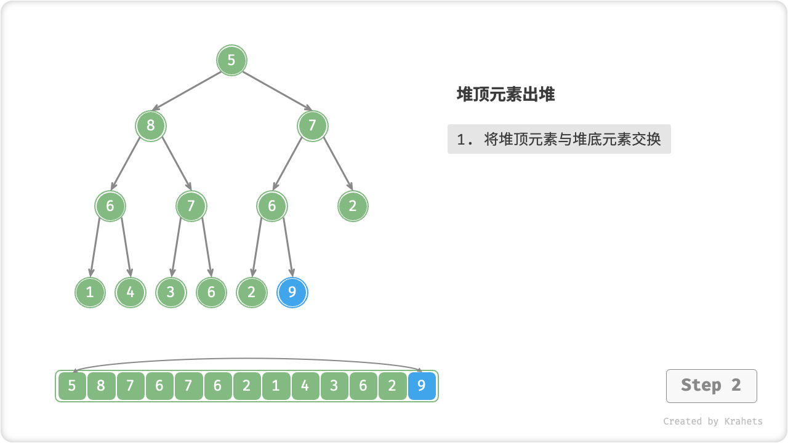
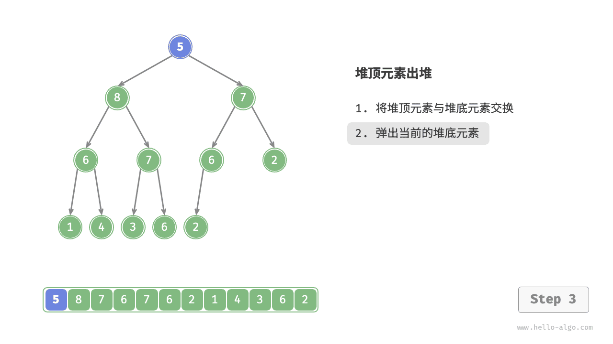
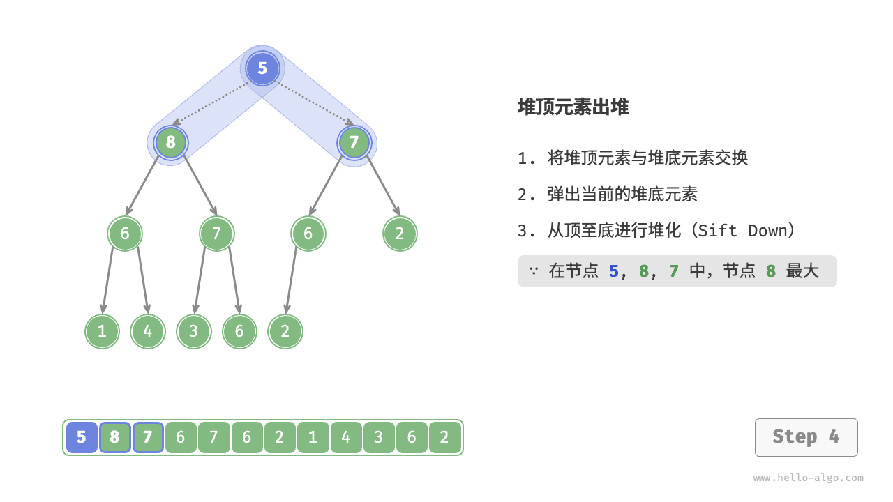
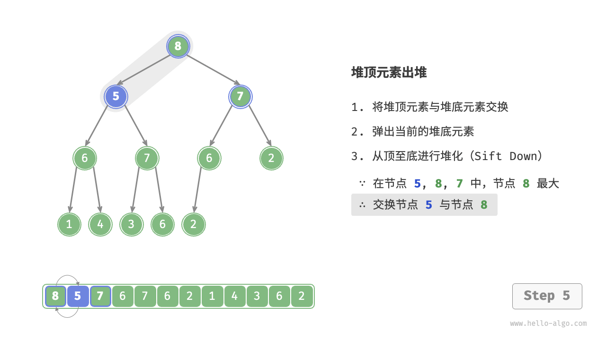
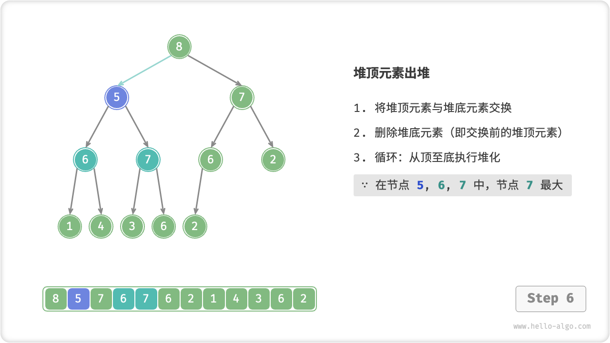

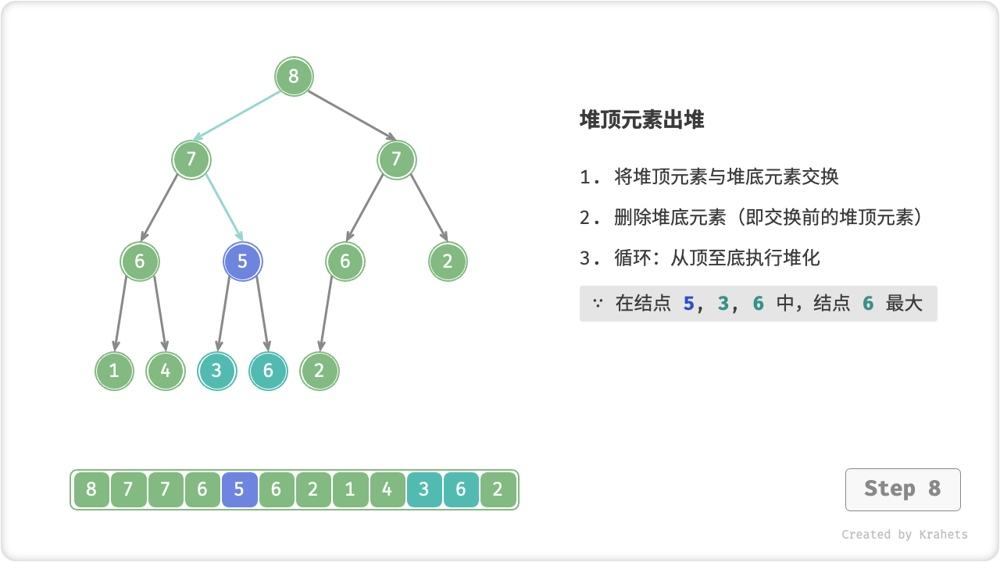
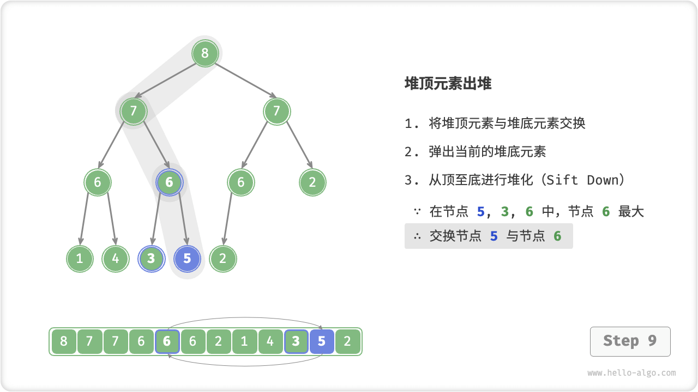
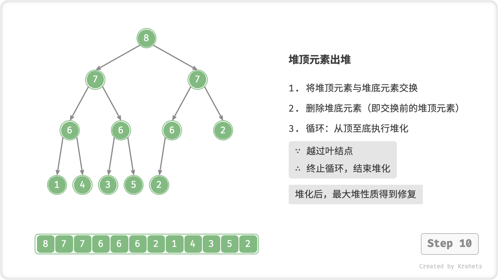
与元素入堆操作相似，堆顶元素出堆操作的时间复杂度也为 \(O(\log n)\) 。
/* 元素出堆 */
int pop() {
// 判空处理
if (isEmpty())
throw new IndexOutOfBoundsException();
// 交换根节点与最右叶节点（即交换首元素与尾元素）
swap(0, size() - 1);
// 删除节点
int val = maxHeap.remove(size() - 1);
// 从顶至底堆化
siftDown(0);
// 返回堆顶元素
return val;
}
/* 从节点 i 开始，从顶至底堆化 */
void siftDown(int i) {
while (true) {
// 判断节点 i, l, r 中值最大的节点，记为 ma
int l = left(i), r = right(i), ma = i;
if (l < size() && maxHeap.get(l) > maxHeap.get(ma))
ma = l;
if (r < size() && maxHeap.get(r) > maxHeap.get(ma))
ma = r;
// 若节点 i 最大或索引 l, r 越界，则无需继续堆化，跳出
if (ma == i)
break;
// 交换两节点
swap(i, ma);
// 循环向下堆化
i = ma;
}
}
/* 元素出堆 */
void pop() {
// 判空处理
if (empty()) {
throw out_of_range("堆为空");
}
// 交换根节点与最右叶节点（即交换首元素与尾元素）
swap(maxHeap[0], maxHeap[size() - 1]);
// 删除节点
maxHeap.pop_back();
// 从顶至底堆化
siftDown(0);
}
/* 从节点 i 开始，从顶至底堆化 */
void siftDown(int i) {
while (true) {
// 判断节点 i, l, r 中值最大的节点，记为 ma
int l = left(i), r = right(i), ma = i;
// 若节点 i 最大或索引 l, r 越界，则无需继续堆化，跳出
if (l < size() && maxHeap[l] > maxHeap[ma])
ma = l;
if (r < size() && maxHeap[r] > maxHeap[ma])
ma = r;
// 若节点 i 最大或索引 l, r 越界，则无需继续堆化，跳出
if (ma == i)
break;
swap(maxHeap[i], maxHeap[ma]);
// 循环向下堆化
i = ma;
}
}
def pop(self) -> int:
"""元素出堆"""
# 判空处理
if self.is_empty():
raise IndexError("堆为空")
# 交换根节点与最右叶节点（即交换首元素与尾元素）
self.swap(0, self.size() - 1)
# 删除节点
val = self.max_heap.pop()
# 从顶至底堆化
self.sift_down(0)
# 返回堆顶元素
return val
def sift_down(self, i: int):
"""从节点 i 开始，从顶至底堆化"""
while True:
# 判断节点 i, l, r 中值最大的节点，记为 ma
l, r, ma = self.left(i), self.right(i), i
if l < self.size() and self.max_heap[l] > self.max_heap[ma]:
ma = l
if r < self.size() and self.max_heap[r] > self.max_heap[ma]:
ma = r
# 若节点 i 最大或索引 l, r 越界，则无需继续堆化，跳出
if ma == i:
break
# 交换两节点
self.swap(i, ma)
# 循环向下堆化
i = ma
/* 元素出堆 */
func (h *maxHeap) pop() any {
// 判空处理
if h.isEmpty() {
fmt.Println("error")
return nil
}
// 交换根节点与最右叶节点（即交换首元素与尾元素）
h.swap(0, h.size()-1)
// 删除节点
val := h.data[len(h.data)-1]
h.data = h.data[:len(h.data)-1]
// 从顶至底堆化
h.siftDown(0)
// 返回堆顶元素
return val
}
/* 从节点 i 开始，从顶至底堆化 */
func (h *maxHeap) siftDown(i int) {
for true {
// 判断节点 i, l, r 中值最大的节点，记为 max
l, r, max := h.left(i), h.right(i), i
if l < h.size() && h.data[l].(int) > h.data[max].(int) {
max = l
}
if r < h.size() && h.data[r].(int) > h.data[max].(int) {
max = r
}
// 若节点 i 最大或索引 l, r 越界，则无需继续堆化，跳出
if max == i {
break
}
// 交换两节点
h.swap(i, max)
// 循环向下堆化
i = max
}
}
/* 元素出堆 */
pop() {
// 判空处理
if (this.isEmpty()) throw new Error('堆为空');
// 交换根节点与最右叶节点（即交换首元素与尾元素）
this.#swap(0, this.size() - 1);
// 删除节点
const val = this.#maxHeap.pop();
// 从顶至底堆化
this.#siftDown(0);
// 返回堆顶元素
return val;
}
/* 从节点 i 开始，从顶至底堆化 */
#siftDown(i) {
while (true) {
// 判断节点 i, l, r 中值最大的节点，记为 ma
const l = this.#left(i),
r = this.#right(i);
let ma = i;
if (l < this.size() && this.#maxHeap[l] > this.#maxHeap[ma]) ma = l;
if (r < this.size() && this.#maxHeap[r] > this.#maxHeap[ma]) ma = r;
// 若节点 i 最大或索引 l, r 越界，则无需继续堆化，跳出
if (ma == i) break;
// 交换两节点
this.#swap(i, ma);
// 循环向下堆化
i = ma;
}
}
/* 元素出堆 */
pop(): number {
// 判空处理
if (this.isEmpty()) throw new RangeError('Heap is empty.');
// 交换根节点与最右叶节点（即交换首元素与尾元素）
this.swap(0, this.size() - 1);
// 删除节点
const val = this.maxHeap.pop();
// 从顶至底堆化
this.siftDown(0);
// 返回堆顶元素
return val;
}
/* 从节点 i 开始，从顶至底堆化 */
siftDown(i: number): void {
while (true) {
// 判断节点 i, l, r 中值最大的节点，记为 ma
const l = this.left(i),
r = this.right(i);
let ma = i;
if (l < this.size() && this.maxHeap[l] > this.maxHeap[ma]) ma = l;
if (r < this.size() && this.maxHeap[r] > this.maxHeap[ma]) ma = r;
// 若节点 i 最大或索引 l, r 越界，则无需继续堆化，跳出
if (ma == i) break;
// 交换两节点
this.swap(i, ma);
// 循环向下堆化
i = ma;
}
}
/* 元素出堆 */
int pop(maxHeap *h) {
// 判空处理
if (isEmpty(h)) {
printf("heap is empty!");
return INT_MAX;
}
// 交换根节点与最右叶节点（即交换首元素与尾元素）
swap(h, 0, size(h) - 1);
// 删除节点
int val = h->data[h->size - 1];
h->size--;
// 从顶至底堆化
siftDown(h, 0);
// 返回堆顶元素
return val;
}
/* 从节点 i 开始，从顶至底堆化 */
void siftDown(maxHeap *h, int i) {
while (true) {
// 判断节点 i, l, r 中值最大的节点，记为 max
int l = left(h, i);
int r = right(h, i);
int max = i;
if (l < size(h) && h->data[l] > h->data[max]) {
max = l;
}
if (r < size(h) && h->data[r] > h->data[max]) {
max = r;
}
// 若节点 i 最大或索引 l, r 越界，则无需继续堆化，跳出
if (max == i) {
break;
}
// 交换两节点
swap(h, i, max);
// 循环向下堆化
i = max;
}
}
/* 元素出堆 */
int pop() {
// 判空处理
if (isEmpty())
throw new IndexOutOfRangeException();
// 交换根节点与最右叶节点（即交换首元素与尾元素）
swap(0, size() - 1);
// 删除节点
int val = maxHeap.Last();
maxHeap.RemoveAt(size() - 1);
// 从顶至底堆化
siftDown(0);
// 返回堆顶元素
return val;
}
/* 从节点 i 开始，从顶至底堆化 */
void siftDown(int i) {
while (true) {
// 判断节点 i, l, r 中值最大的节点，记为 ma
int l = left(i), r = right(i), ma = i;
if (l < size() && maxHeap[l] > maxHeap[ma])
ma = l;
if (r < size() && maxHeap[r] > maxHeap[ma])
ma = r;
// 若“节点 i 最大”或“越过叶节点”，则结束堆化
if (ma == i) break;
// 交换两节点
swap(i, ma);
// 循环向下堆化
i = ma;
}
}
/* 元素出堆 */
func pop() -> Int {
// 判空处理
if isEmpty() {
fatalError("堆为空")
}
// 交换根节点与最右叶节点（即交换首元素与尾元素）
swap(i: 0, j: size() - 1)
// 删除节点
let val = maxHeap.remove(at: size() - 1)
// 从顶至底堆化
siftDown(i: 0)
// 返回堆顶元素
return val
}
/* 从节点 i 开始，从顶至底堆化 */
func siftDown(i: Int) {
var i = i
while true {
// 判断节点 i, l, r 中值最大的节点，记为 ma
let l = left(i: i)
let r = right(i: i)
var ma = i
if l < size(), maxHeap[l] > maxHeap[ma] {
ma = l
}
if r < size(), maxHeap[r] > maxHeap[ma] {
ma = r
}
// 若节点 i 最大或索引 l, r 越界，则无需继续堆化，跳出
if ma == i {
break
}
// 交换两节点
swap(i: i, j: ma)
// 循环向下堆化
i = ma
}
}
// 元素出堆
fn pop(self: *Self) !T {
// 判断处理
if (self.isEmpty()) unreachable;
// 交换根节点与最右叶节点（即交换首元素与尾元素）
try self.swap(0, self.size() - 1);
// 删除节点
var val = self.max_heap.?.pop();
// 从顶至底堆化
try self.siftDown(0);
// 返回堆顶元素
return val;
}
// 从节点 i 开始，从顶至底堆化
fn siftDown(self: *Self, i_: usize) !void {
var i = i_;
while (true) {
// 判断节点 i, l, r 中值最大的节点，记为 ma
var l = left(i);
var r = right(i);
var ma = i;
if (l < self.size() and self.max_heap.?.items[l] > self.max_heap.?.items[ma]) ma = l;
if (r < self.size() and self.max_heap.?.items[r] > self.max_heap.?.items[ma]) ma = r;
// 若节点 i 最大或索引 l, r 越界，则无需继续堆化，跳出
if (ma == i) break;
// 交换两节点
try self.swap(i, ma);
// 循环向下堆化
i = ma;
}
}
8.1.3. 堆常见应用¶
- 优先队列：堆通常作为实现优先队列的首选数据结构，其入队和出队操作的时间复杂度均为 \(O(\log n)\) ，而建队操作为 \(O(n)\) ，这些操作都非常高效。
- 堆排序：给定一组数据，我们可以用它们建立一个堆，然后不断地执行元素出堆操作，从而得到有序数据。然而，我们通常会使用一种更优雅的方式实现堆排序，详见后续的堆排序章节。
- 获取最大的 \(k\) 个元素：这是一个经典的算法问题，同时也是一种典型应用，例如选择热度前 10 的新闻作为微博热搜，选取销量前 10 的商品等。